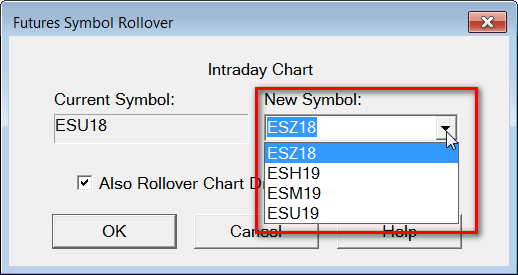

Changing to a New Futures Contract Month
- Introduction
- Changing to a New Futures Contract Month
- Enabling/Disabling Automatic Rollover
- Updating the Intraday File Update List
- Allowing Lines and Other Chart Drawings From Other Contract Months to Appear on the Current Contract
- Adjusting Chart Drawings to Match Futures Contract Rollover Difference
Introduction
This page documents how to change the symbol of a futures contract chart, to the next contract month.
For example, if you are following ESH14 and then trading begins in ESM14, then follow the instructions below.
Changing to a New Futures Contract Month
{kind=link}
- Go to one of your charts that you want to rollover and select Chart >> Perform Futures Symbol Rollover on the menu.
- In the New Symbol box, enter or select the symbol of the futures contract you want to change to. If you do not see it listed, manually type it in.
- If you also want to rollover the symbol of Chart Drawings to the new symbol, then enable the Rollover Chart Drawing Symbols checkbox. This will not adjust the values of the Chart Drawing points. It will only update the symbol of them. To adjust the prices/values, refer to Adjusting Chart Drawings to Match Futures Contract Rollover Difference.
- Press OK to rollover the futures contract symbol. In the case of an Intraday chart, all Intraday charts that you currently have open for the same symbol, in all Chartbooks, will be rolled over to the new symbol. In the case of a Historical Daily chart, all Historical Daily charts that you currently have open for the same symbol will be rolled over to the new symbol.
- If you have rolled over the futures contract symbol for an Intraday chart, and you have Historical Daily charts open for futures, then you also need to perform this procedure for the Historical Daily charts. The same is true if you rolled over the futures contract symbol for a Historical Daily chart, and you have Intraday charts open, then you will need to perform this procedure for the Intraday charts.
- Repeat the above procedure for each futures contract market you need to rollover.
- To include data from the prior futures contract month in the chart, refer to the Continuous Futures Contract Charts page. All other previous methods to include data from the prior futures contract, are not recommended to be used anymore.
After this procedure, if you want to fully re-download all of the data in your chart for any reason, you can do this by selecting Edit >> Delete All Data And Download.
Enabling/Disabling Automatic Rollover
It is supported to automatically rollover a future symbol in an existing chart when the Chartbook it is contained within is opened. The setting is Chart >> Chart Settings >> Automatically Rollover Futures Symbol.
To prevent the automatic rollover uncheck this option. Otherwise, if you try to use an expired futures contract symbol in the chart, it will just get changed to the current futures contract symbol when this option is enabled.
Also refer to the Global Settings >> General Settings >> Additional Days to Add to Rollover Date for Automatic Chart and Quote Board Rollovers setting.
Updating the Intraday File Update List
If you are using the Global Settings >> Intraday File Update List , then after changing to a new futures contract month in your charts, select Global Settings >> Intraday File Update List on the menu.
If you have added futures symbols to this list previously, then modify the Month-Year part of the symbols to the current Month-Year portion you are charting.
To do this, click on the symbol in the Symbols list, modify the symbol displayed in the Symbol box. Do this for each futures symbol, and press OK when finished.
Allowing Lines and Other Chart Drawings From Other Contract Months to Appear on the Current Contract
To make Chart Drawings like Lines and Rays drawn on other futures contract months appear on the current futures contract month chart, select Chart >> Chart Settings >> Chart Drawings. Enable the Show Chart Drawing For Different Symbols option.
Another method to make Chart Drawings like Lines and Rays drawn on other futures contract months appear on the current futures contract month chart, is by selecting Chart >> Update Chart Drawings to Current Symbol. This command will change the symbol of Chart Drawings with the same futures base symbol as the symbol of the current chart, to the symbol of the current chart. This command only applies to the active chart.
Adjusting Chart Drawings to Match Futures Contract Rollover Difference
When rolling over to a new futures contract month in a chart, almost always the next contract has a price difference compared to the previous futures contract month. This is due to interest rates.
When you are using the Continuous Futures Contract feature in Sierra Chart and performing back adjustments, what this means is that Chart Drawings, (Lines, Rays, ...) will shift relative to the price bars they have been drawn over, once the back adjustment is done.
Additionally, if the Chart Drawings that were drawn previously on the prior contract month, extend or appear for days in the chart for the current contract month, then their vertical axis position will be in a different location due to the pricing differences between contract months.
A solution to this is to adjust the Chart Drawings by the price difference between the two contract months. Follow these instructions to do this:
- Go to the Continuous Futures Contract chart which contains the Chart Drawings to be adjusted.
- You will first want to determine what the back adjustment amount is. This can be determined through the Sierra Chart Message Log. For how to access this information, refer to Controlling Rollover Amount.
- Select Tools >> Manage Chart Drawings Window on the menu.
- Enable the Multiple Selection option.
- In the list of Chart Drawings, select one or more Chart Drawings that you want to adjust by left clicking on them.
- Press the Adjust button.
- Enter the amount to adjust the Chart Drawings in the Adjust Amount box. Use a negative number to reduce/lower the prices of the Chart Drawings.
- Press the OK button to make the adjustment.
- Refer to the image the below for further clarity.
{kind=link}
*Last modified Wednesday, 22nd February, 2023.